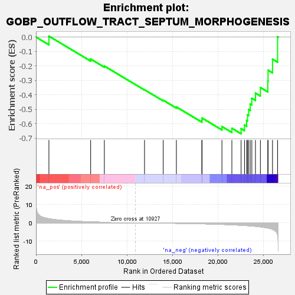
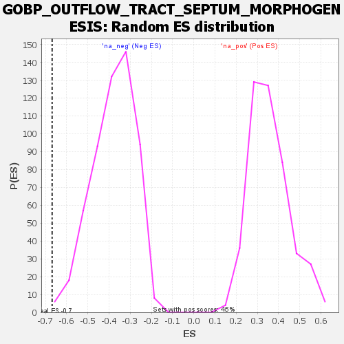

| | | Dataset | wbh_treatment_res_for_gsea |
| Phenotype | NoPhenotypeAvailable |
| Upregulated in class | na_neg |
| GeneSet | GOBP_OUTFLOW_TRACT_SEPTUM_MORPHOGENESIS |
| Enrichment Score (ES) | -0.66859245 |
| Normalized Enrichment Score (NES) | -1.7595059 |
| Nominal p-value | 0.0018050541 |
| FDR q-value | 0.12264123 |
| FWER p-Value | 0.922 |
Table: GSEA Results Summary

Fig 1: Enrichment plot: GOBP_OUTFLOW_TRACT_SEPTUM_MORPHOGENESIS
Profile of the Running ES Score & Positions of GeneSet Members on the Rank Ordered List
| SYMBOL | RANK IN GENE LIST | RANK METRIC SCORE | RUNNING ES | CORE ENRICHMENT | | 1 | TGFBR2 | 1420 | 2.266 | 0.0066 | No |
| 2 | ENG | 6004 | 0.532 | -0.1518 | No |
| 3 | BMPR1A | 7507 | 0.310 | -0.2001 | No |
| 4 | ACVR1 | 11919 | -0.075 | -0.3641 | No |
| 5 | BMPR2 | 13971 | -0.186 | -0.4364 | No |
| 6 | ROBO1 | 15418 | -0.295 | -0.4830 | No |
| 7 | ISL1 | 18214 | -0.551 | -0.5736 | No |
| 8 | PARVA | 18237 | -0.553 | -0.5598 | No |
| 9 | TGFB2 | 20420 | -0.880 | -0.6186 | No |
| 10 | ZFPM2 | 21511 | -1.100 | -0.6305 | No |
| 11 | MSX2 | 22525 | -1.348 | -0.6329 | Yes |
| 12 | TBX20 | 22899 | -1.459 | -0.6083 | Yes |
| 13 | FGFR2 | 23132 | -1.531 | -0.5765 | Yes |
| 14 | SMAD4 | 23228 | -1.569 | -0.5385 | Yes |
| 15 | GATA6 | 23355 | -1.616 | -0.5005 | Yes |
| 16 | FGF8 | 23526 | -1.669 | -0.4627 | Yes |
| 17 | SEMA3C | 23704 | -1.746 | -0.4231 | Yes |
| 18 | LRP2 | 24102 | -1.924 | -0.3871 | Yes |
| 19 | ROBO2 | 24642 | -2.228 | -0.3484 | Yes |
| 20 | NKX2-5 | 25462 | -2.841 | -0.3040 | Yes |
| 21 | NRP2 | 25486 | -2.868 | -0.2289 | Yes |
| 22 | TBX2 | 25974 | -3.574 | -0.1527 | Yes |
| 23 | NRP1 | 26534 | -6.648 | 0.0023 | Yes |
Table: GSEA details [plain text format]

Fig 2: GOBP_OUTFLOW_TRACT_SEPTUM_MORPHOGENESIS: Random ES distribution
Gene set null distribution of ES for GOBP_OUTFLOW_TRACT_SEPTUM_MORPHOGENESIS